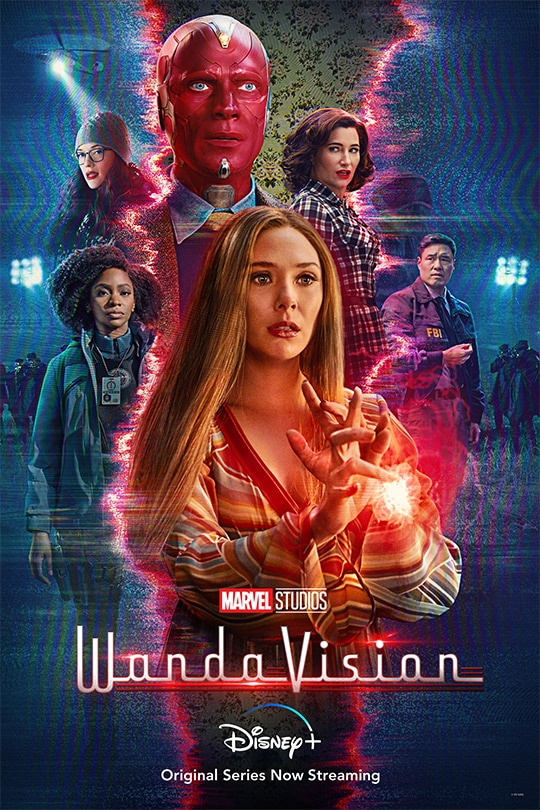
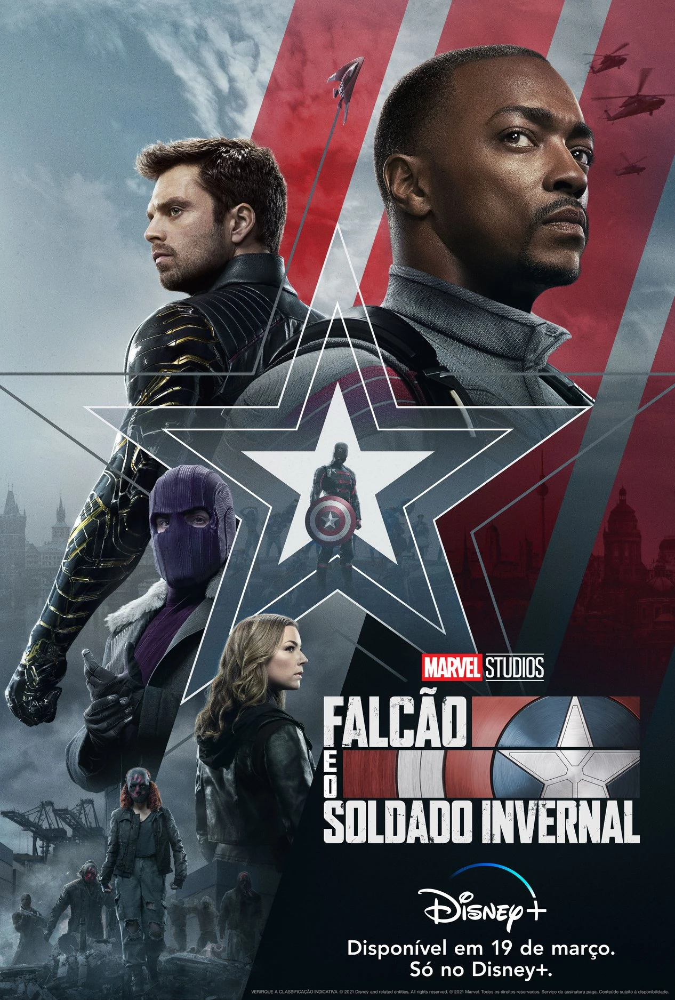
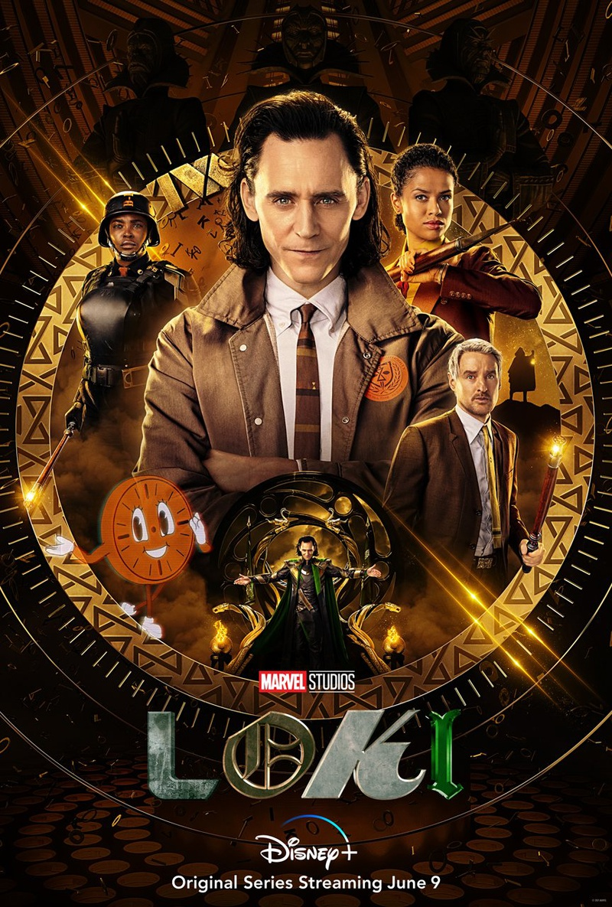
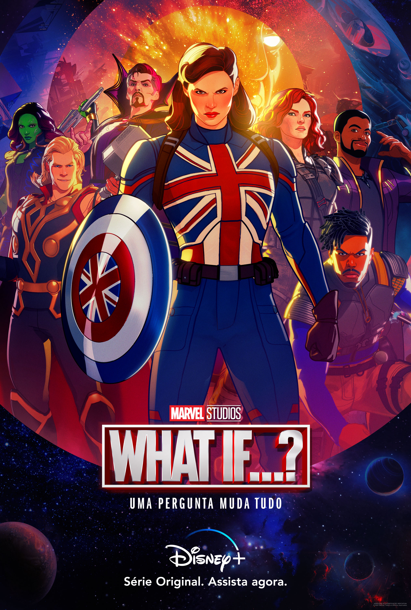
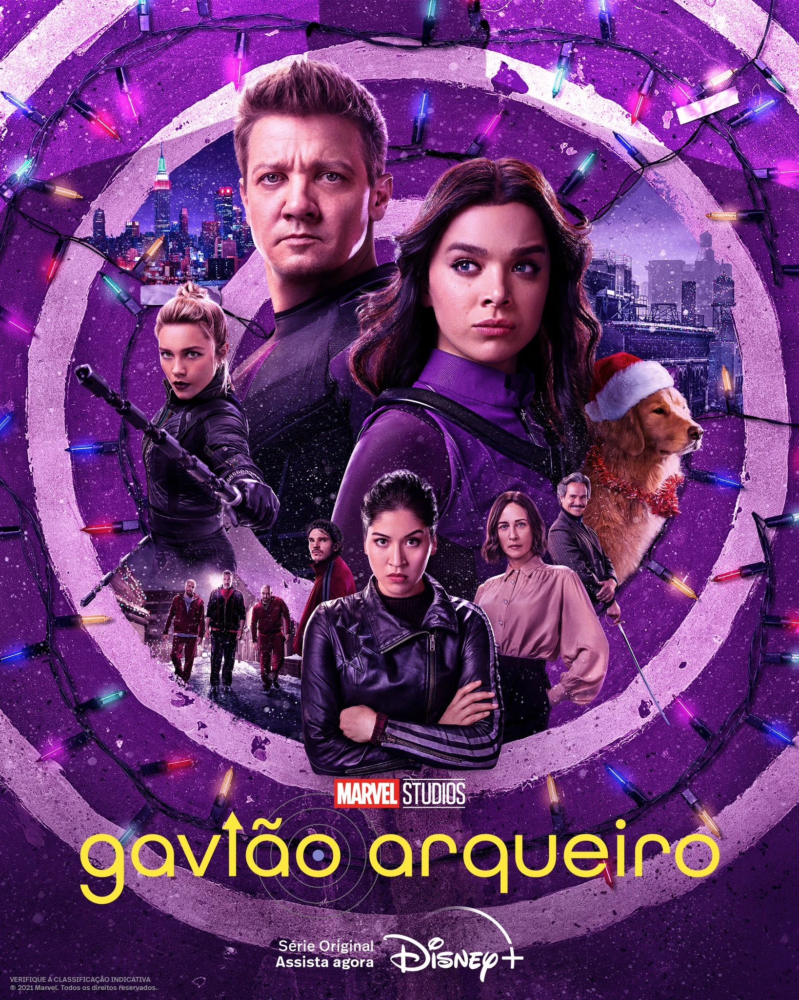
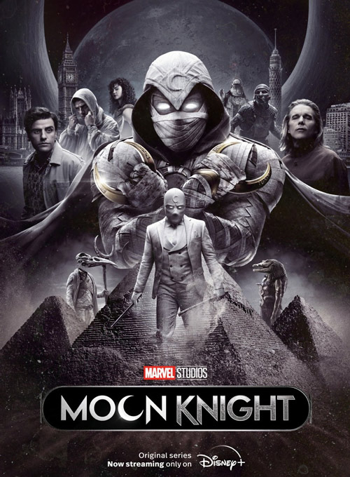
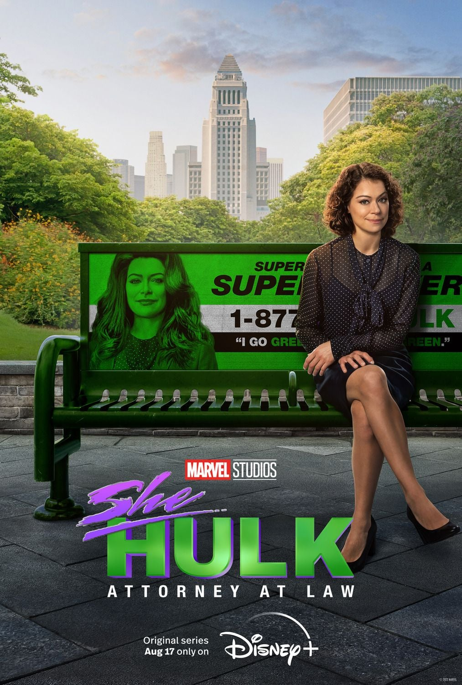

Séries 📺
As séries expandiram ainda mais o universo da Marvel, apresentando novas histórias
e aprofundando personagens conhecidos.
Em sua maioria foram lançadas principalmente durante a pandemia, já que o mundo todo estava em quarentena
e os cinemas estavam fechados, não restou opções para a Marvel além de se render ás plataformas de streaming.
Aqui você pode conhecer algumas das principais séries
relacionadas ao UCM e descobrir como elas se conectam ao universo dos filmes.
(séries organizadas por ordem de lançamento)
| Séries | Sobre |
|---|---|
|
 |
Vivendo vidas suburbanas |
|
 |
Falcão e o Soldado Invernal |
|
 |
Usando o tesseract que roubou |
|
 |
O Vigia observa os eventos |
|
 |
Clint Barton tenta deixar seu |
|
 |
Steven Grant tem transtorno |

|
Kamala Khan, uma adolescente |
|
 de Heróis, 2022 |
Jennifer Walters tem uma |
|
|
Agatha Harkness está |